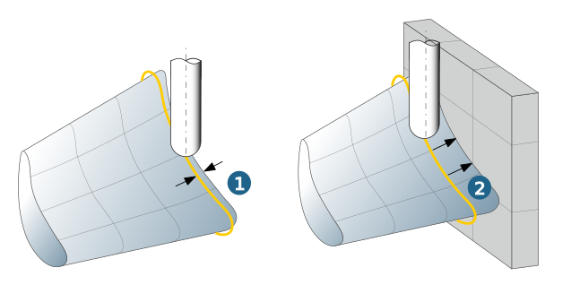
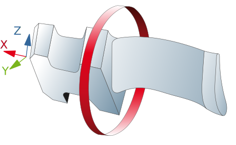

Parameters
Limit 1 (Shroud) / Limit 2 (Hub)
Limitations define the machining area between hub and shroud Closed contours must be selected.
The allocation of the profiles has no influence on the machining direction.
On: The first/last toolpath is traversed on the respective contour. This option is useful if the tool traversing the curve reaches the blade.
Lateral: The first/last toolpath is traversed laterally offset to the curve by the tool radius. It is preferable to use this option if the surface boundary of the platform was selected as the boundary curve.
Offset: Using a positive value, this path can also be moved further into the machining area (1). This is particularly important if the blade enters the platform at an extremely oblique angle.
Automatic: The smallest possible distance between the tool shank and the side surface is automatically calculated (2).
|  |
Warning
The machining area must be defined so that the first/last path lies within the area of the blade surfaces selected.
Lateral infeed mode
Constant side step: The maximum stepover is assigned by manual input.
Scallop height: The maximum side path distance for the current tool is derived from the maximum scallop height.
Retraction on collision
Distance control: If the Max. distance option is enabled, a distance can be specified which, if exceeded, will cause the complete circuit to be skipped. This applies, for example, to geometries at the foot and head or also to stiffeners on the blade.
Allowance
Blade allowance: (1) Allowance for the blade surfaces.
Side allowance: (2) Allowance for the side surfaces.
 |
Technology add. edge allowance
If a little more material is to be left on the edges, the following options are available – depending on the option selected under → – to define an independent additional allowance for the edges.
1) Manually defined boundary: Define an independent additional allowance for both edges with the parameters Leading edge offset and Trailing edge offset.
2) Surface boundary / Automatic: Use the Edge offset parameter to define an offset value that applies equally to both edges.
Technology: entry paths / Technology: final paths
Blades can require step-by-step blade machining. Ensure a smooth overlap at the start and end of machining using the technology for entry and final tool paths.
Advantageous when
-
the turbine blades must be supported to prevent deformation,
-
blade areas cannot be machined with Top Milling.
For a smooth overlap, define the respective number of additional Overlapping paths as well as the Start distance / End distance.
The side stepover is continued. The machining area on the surface must be defined in such a way that the overlapping paths do not cause any collisions with the part.
Technology: Opening cut
You can use the Axial infeed and the Total axial infeed to achieve a spiral plunge. The spiral plunge should preferably be used if the blade has a large allowance and/or a larger residual stock remains to the side of the first cut.
Technology: Edge behavior
A separate Feedrate or Offset can be defined in the edge area. Depending on the function selected under → , either independent values can be defined for each edge or a common value can be defined for both edges.
For the → option, different offset values and feedrates can be defined in each case. To do this, use the parameters Leading edge feedrate and Trailing edge feedrate or Leading edge offset and Trailing edge offset. An additional offset is particularly useful, for example, to protect small edges in the event of subsequent barrel finishing.
Clearance mode
Specify the type of retract movement.
Radial: In the Clearance area, enter the value for the Clearance radius.
Figure: Clearance mode: Radial
|  |
Note
In the case of machines that are used for turbine blade milling, the workspace is generally measured extremely tightly. The radial approach and retract strategy for a (shown) clearance cylinder helps to safely limit these movements independently of the frame orientation.